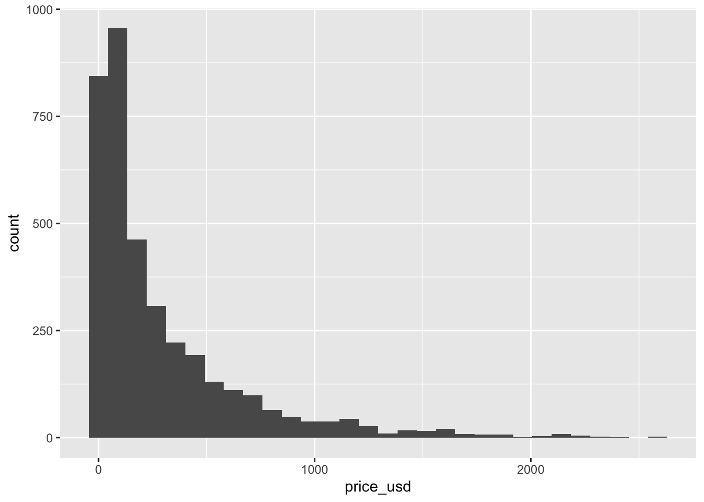
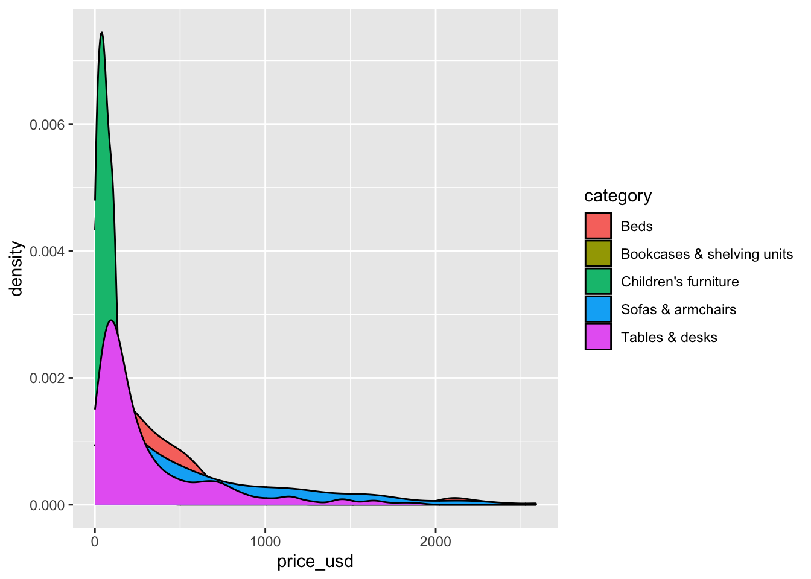
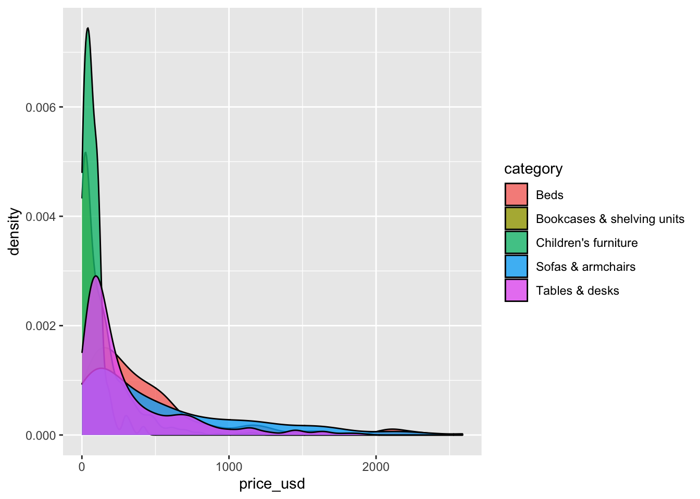

usethis::use_git_config(
user.name = "GitHub username",
user.email = "Email associated with your GitHub account"
)Lab 1 - Meet the toolkit
Introduction
This lab will go through much of the same workflow we’ve demonstrated in class. The main goal is to reinforce our understanding of R and RStudio, which we will be using throughout the course both to learn the statistical concepts discussed in the course and to analyze real data and come to informed conclusions.
Note
R is the name of the programming language itself and RStudio is a convenient interface.
An additional goal is to reinforce git and GitHub, the collaboration and version control system that we will be using throughout the course.
Note
Git is a version control system (like “Track Changes” features from Microsoft Word but more powerful) and GitHub is the home for your Git-based projects on the internet (like DropBox but much better).
As the labs progress, you are encouraged to explore beyond what the labs dictate; a willingness to experiment will make you a much better programmer. Before we get to that stage, however, you need to build some basic fluency in R. Today we begin with the fundamental building blocks of R and RStudio: the interface, reading in data, and basic commands.
To make versioning simpler, this is a solo lab. In the future, you’ll learn about collaborating on GitHub and producing a single lab report for your lab team, but for now, concentrate on getting the basics down.
Learning goals
By the end of the lab, you will…
- Be familiar with the workflow using R, RStudio, Git, and GitHub
- Gain practice writing a reproducible report using RMarkdown
- Practice version control using GitHub
- Be able to create data visualizations using
ggplot2 - Be able to describe variable distributions and the relationship between multiple variables
Getting started
Important
Your lab TA will lead you through the Getting Started section.
Log in to RStudio
- Go to https://vm-manage.oit.duke.edu/containers and login with your Duke NetID and Password.
- Click STA210 to log into the Docker container. You should now see the RStudio environment.
Warning
If you haven’t yet done so, you will need to reserve a container for STA210 first.
Set up your SSH key
You will authenticate GitHub using SSH. Below are an outline of the authentication steps; you are encouraged to follow along as your TA demonstrates the steps.
Note
You only need to do this authentication process one time on a single system.
- Type
credentials::ssh_setup_github()into your console. - R will ask “No SSH key found. Generate one now?” You should click 1 for yes.
- You will generate a key. It will begin with “ssh-rsa….” R will then ask “Would you like to open a browser now?” You should click 1 for yes.
- You may be asked to provide your GitHub username and password to log into GitHub. After entering this information, you should paste the key in and give it a name. You might name it in a way that indicates where the key will be used, e.g.,
sta210).
You can find more detailed instructions here if you’re interested.
Configure Git
There is one more thing we need to do before getting started on the assignment. Specifically, we need to configure your git so that RStudio can communicate with GitHub. This requires two pieces of information: your name and email address.
To do so, you will use the use_git_config() function from the usethis package.
Type the following lines of code in the console in RStudio filling in your name and the email address associated with your GitHub account.
For example, mine would be
usethis::use_git_config(
user.name = "mine-cetinkaya-rundel",
user.email = "cetinkaya.mine@gmail.com"
)You are now ready interact with GitHub via RStudio!
Clone the repo & start new RStudio project
Go to the course organization at github.com/sta210-s22 organization on GitHub. Click on the repo with the prefix lab-1. It contains the starter documents you need to complete the lab.
Click on the green CODE button, select Use SSH (this might already be selected by default, and if it is, you’ll see the text Clone with SSH). Click on the clipboard icon to copy the repo URL.
In RStudio, go to File ➛ New Project ➛Version Control ➛ Git.
Copy and paste the URL of your assignment repo into the dialog box Repository URL. Again, please make sure to have SSH highlighted under Clone when you copy the address.
Click Create Project, and the files from your GitHub repo will be displayed in the Files pane in RStudio.
Click lab-1-ikea.qmd to open the template R Markdown file. This is where you will write up your code and narrative for the lab.
R and R Studio
Below are the components of the RStudio IDE.

Below are the components of a Quarto (.qmd) file.

YAML
The top portion of your R Markdown file (between the three dashed lines) is called YAML. It stands for “YAML Ain’t Markup Language”. It is a human friendly data serialization standard for all programming languages. All you need to know is that this area is called the YAML (we will refer to it as such) and that it contains meta information about your document.
Important
Open the Quarto (`.qmd`) file in your project, change the author name to your name, and render the document. Examine the rendered document.
Committing changes
Now, go to the Git pane in your RStudio instance. This will be in the top right hand corner in a separate tab.
If you have made changes to your Rmd file, you should see it listed here. Click on it to select it in this list and then click on Diff. This shows you the difference between the last committed state of the document and its current state including changes. You should see deletions in red and additions in green.
If you’re happy with these changes, we’ll prepare the changes to be pushed to your remote repository. First, stage your changes by checking the appropriate box on the files you want to prepare. Next, write a meaningful commit message (for instance, “updated author name”) in the Commit message box. Finally, click Commit. Note that every commit needs to have a commit message associated with it.
You don’t have to commit after every change, as this would get quite tedious. You should commit states that are meaningful to you for inspection, comparison, or restoration.
In the first few assignments we will tell you exactly when to commit and in some cases, what commit message to use. As the semester progresses we will let you make these decisions.
Now let’s make sure all the changes went to GitHub. Go to your GitHub repo and refresh the page. You should see your commit message next to the updated files. If you see this, all your changes are on GitHub and you’re good to go!
Push changes
Now that you have made an update and committed this change, it’s time to push these changes to your repo on GitHub.
In order to push your changes to GitHub, you must have staged your commit to be pushed. click on Push.
Packages
We will use the following package in today’s lab.
library(tidyverse)── Attaching packages ─────────────────────────────────────── tidyverse 1.3.1 ──✓ ggplot2 3.3.5 ✓ purrr 0.3.4
✓ tibble 3.1.6 ✓ dplyr 1.0.7
✓ tidyr 1.1.4 ✓ stringr 1.4.0
✓ readr 2.1.1 ✓ forcats 0.5.1── Conflicts ────────────────────────────────────────── tidyverse_conflicts() ──
x dplyr::filter() masks stats::filter()
x dplyr::lag() masks stats::lag()The tidyverse is a meta-package. When you load it you get eight packages loaded for you:
- ggplot2: for data visualization
- dplyr: for data wrangling
- tidyr: for data tidying and rectangling
- readr: for reading and writing data
- tibble: for modern, tidy data frames
- stringr: for string manipulation
- forcats: for dealing with factors
- purrr: for iteration with functional programming
The message that’s printed when you load the package tells you which versions of these packages are loaded as well as any conflicts they may have introduced, e.g., the filter() function from dplyr has now masked (overwritten) the filter() function available in base R (and that’s ok, we’ll use dplyr::filter() anyway).
We’ll be using functionality from all of these packages throughout the semester, though we’ll always load them all at once with library(tidyverse). You can find out more about the tidyverse and each of the packages that make it up here.
Data: Ikea furniture
Today’s data is all about Ikea furniture. The data was obtained from the TidyTuesday data collection.
Use the code below to read in the data.
ikea <- read_csv("data/ikea.csv")Data dictionary
The variable definitions are as follows:
| variable | class | description |
|---|---|---|
item_id |
double | item id which can be used later to merge with other IKEA data frames |
name |
character | the commercial name of items |
category |
character | the furniture category that the item belongs to (Sofas, beds, chairs, Trolleys,…) |
sellable_online |
logical | Sellable online TRUE or FALSE |
link |
character | the web link of the item |
other_colors |
character | if other colors are available for the item, or just one color as displayed in the website (Boolean) |
short_description |
character | a brief description of the item |
designer |
character | The name of the designer who designed the item. this is extracted from the full_description column. |
depth |
double | Depth of the item in Centimeter |
height |
double | Height of the item in Centimeter |
width |
double | Width of the item in Centimeter |
price_usd |
double | the current price in US dollars as it is shown in the website by 4/20/2020 |
View the data
Before doing any analysis, you may want to get quick view of the data. This is useful when you’ve imported data to see if your data imported correctly. We can use the view() function to see the entire data set in RStudio. Type the code below in the Console to view the entire dataset.
view(ikea)Exercises
Write all code and narrative in your R Markdown file. Write all narrative in complete sentences. Throughout the assignment, you should periodically Render your Quarto document to produce the updated PDF, commit the changes in the Git pane, and push the updated files to GitHub.
Tip
Make sure we can read all or your code in your PDF document. This means you will need to break up long lines of code. One way to help avoid long lines of code is is start a new line after every pipe (%>%) and plus sign (+).
Exercise 1
The view() function helped us get a quick view of the dataset, but let’s get more detail about its structure. Viewing a summary of the data is a useful starting point for data analysis, especially if the dataset has a large number of observations (rows) or variables (columns). Run the code below to use the glimpse() function to see a summary of the ikea dataset.
How many observations are in the ikea dataset? How many variables?
glimpse(ikea)
Note
In your lab-1-ikea.qmd document you’ll see that we already added the code required for the exercise as well as a sentence where you can fill in the blanks to report the answer. Use this format for the remaining exercises.
Also note that the code chunk as a label: glimpse-data. It’s not required, but good practice and highly encouraged to label your code chunks in this way.
Exercise 2
We begin each regression analysis with exploratory data analysis (EDA) to help us “get to know” the data and examine the variable distributions and relationships between variables. We do this by visualizing the data and calculating summary statistics to describe the variables in our dataset. In this lab, we will focus on data visualizations.
Let’s begin by looking at the price of Ikea furniture. Use the code below to visualize the distribution of price_usd, the price in US dollars.
ggplot(data = ikea, aes(x = price_usd)) +
geom_histogram()`stat_bin()` using `bins = 30`. Pick better value with `binwidth`.
Use the visualization to describe the distribution of price. In your narrative, include description of the shape, approximate center, approximate spread, and any presence of outliers. Briefly explain why the median is more representative of the center of this distribution than the mean.
Tip
When using the visual editor you can insert a code chunk using the Insert menu on top or by using the catch-all ⌘ / shortcut to insert just about anything. Just execute the shortcut then type what you want to insert. If you are at the beginning of a line you can also enter plain / to invoke the shortcut.
Exercise 3
When we make visualizations, we want them to be clear and suitable for a professional audience. This means that, at a minimum, each visualization should have an informative title and informative axis labels. Let’s modify the plot from the previous question to make it suitable for a professional audience. Complete the code below to include an informative title and informative axis labels.
ggplot(data = ikea, aes(x = price_usd)) +
geom_histogram() +
labs(
x = "_____",
y = "_____",
title = "_____"
)This is a good place to fender, commit, and push changes to your remote lab-1 repo on GitHub. Click the checkbox next to each file in the Git pane to stage the updates you’ve made, write an informative commit message (e.g., “Completed exercises 1 - 3”), and push. After you push the changes, the Git pane in RStudio should be empty.
Exercise 4
Another way to visualize numeric data is using density plots. Make a density plot to visualize the distribution of price_usd. Be sure to include an informative title and informative axis labels.
In this course, we’ll be most interested in the relationship between two or more variables, so let’s begin by looking at the distribution of price by category. We’ll focus on the five categories in the code below, since these include commonly purchased types of furniture.
Use the code below to create a new data frame that only includes the furniture categories of interest. We’re assigning this data frame to an object with a new name, so we don’t overwrite the original data.
How many observations are in the ikea_sub dataset? How many variables?
ikea_sub <- ikea %>%
filter(category %in% c(
"Tables & desks", "Beds",
"Bookcases & shelving units",
"Sofas & armchairs", "Children's furniture"
))
Important
You will use this newly constructed data frame, ikea_sub, for the remainder of the lab.
Exercise 5
Let’s make a new visualization with the density curves colored by category, so we can compare the distribution of price for each category.
ggplot(data = ikea_sub, aes(x = price_usd, fill = category)) +
geom_density()
The overlapping colors make it difficult to tell what’s happening with the distributions for the categories plotted first and hence covered by categories plotted over them. We can change the transparency level of the fill color to help with this. The alpha argument takes values between 0 and 1: 0 is completely transparent and 1 is completely opaque. There is no way to tell what value will work best, so it’s best to try a few.
Recreate the density plot using a more suitable alpha level, so we can more easily see the distribution of all the categories. Include an informative title and informative axis labels.
ggplot(data = ikea_sub, aes(x = price_usd, fill = category)) +
geom_density(alpha = 0.8)
This is a good place to render, commit, and push changes to your remote lab-1 repo on GitHub. Click the checkbox next to each file in the Git pane to stage the updates you’ve made, write an informative commit message (e.g., “Completed exercises 4 and 5”), and push. After you push the changes, the Git pane in RStudio should be empty.
Exercise 6
Briefly describe why we defined the fill of the curves by mapping aesthetics of the plot (inside the aes function) but we defined the alpha level as a characteristic of the plotting geom.
Exercise 7
Overlapping density plots are not the only way to visualize the relationship between a quantitative and categorical variable.
Use a different type of plot to visualize the relationship between price_usd and category. Include an informative title and informative axis labels.
Tip
You can use the ggplot2 cheatsheet and from Data to Viz for inspiration.
Exercise 8
Compare and contrast your plots from the previous exercise to the overlapping density plots from Exercise 5. What features are apparent in the plot from the previous exercise that aren’t in the overlapping density plots? What features are apparent in the overlapping density plots that aren’t in the plot from the previous exercise? What features are apparent in both?
This is a good place to render, commit, and push changes to your remote lab-1 repo on GitHub. Click the checkbox next to each file in the Git pane to stage the updates you’ve made, write an informative commit message (e.g., “Completed exercises 6 - 8”), and push. After you push the changes, the Git pane in RStudio should be empty.
Exercise 9
Next, let’s look at the relationship between the price and width of Ikea furniture. Fill in the code below to visualize the relationship between the two variables using a scatterplot.
Then, use your visualization to describe the relationship between the width and price of Ikea furniture.
ggplot(data = _____, aes(x = width, y = _____)) +
geom_point() +
labs(
x = "_____",
y = "_____",
title = "_____"
)Exercise 10
Color the points of the scatterplot by category. Describe how the relationship between price and width of Ikea furniture differs by category, if at all.
You’re done and ready to submit your work! Render, commit, and push all remaining changes. You can use the commit message “Done with Lab 1!” , and make sure you have committed and pushed all changed files to GitHub (your Git pane in RStudio should be empty) and that all documents are updated in your repo on GitHub. The PDF document you submit to Gradescope should be identical to the one in your GitHub repo.
Submission
In this class, we’ll be submitting PDF documents to Gradescope.
Warning
Before you wrap up the assignment, make sure all documents are updated on your GitHub repo. We will be checking these to make sure you have been practicing how to commit and push changes.
Remember – you must turn in a PDF file to the Gradescope page before the submission deadline for full credit.
To submit your assignment:
- Go to http://www.gradescope.com and click Log in in the top right corner.
- Click School Credentials ➡️ Duke NetID and log in using your NetID credentials.
- Click on your STA 210 course.
- Click on the assignment, and you’ll be prompted to submit it.
- Mark the pages associated with each exercise. All of the pages of your lab should be associated with at least one question (i.e., should be “checked”).
- Select the first page of your PDF submission to be associated with the “Workflow & formatting” section.
Grading
Total points available: 50 points.
| Component | Points |
|---|---|
| Ex 1 - 10 | 45 |
| Workflow & formatting | 51 |
1 The “Workflow & formatting” grade is to assess the reproducible workflow. This includes having at least 3 informative commit messages and updating the name and date in the YAML.
Resources for additional practice (optional)
- Chapter 2: Get Started Data Visualization by Kieran Healy
- Chapter 3: Data visualization in R for Data Science by Hadley Wickham
- RStudio Cloud Primers
- Visualization Basics: https://rstudio.cloud/learn/primers/1.1
- Work with Data: https://rstudio.cloud/learn/primers/2
- Visualize Data: https://rstudio.cloud/learn/primers/3